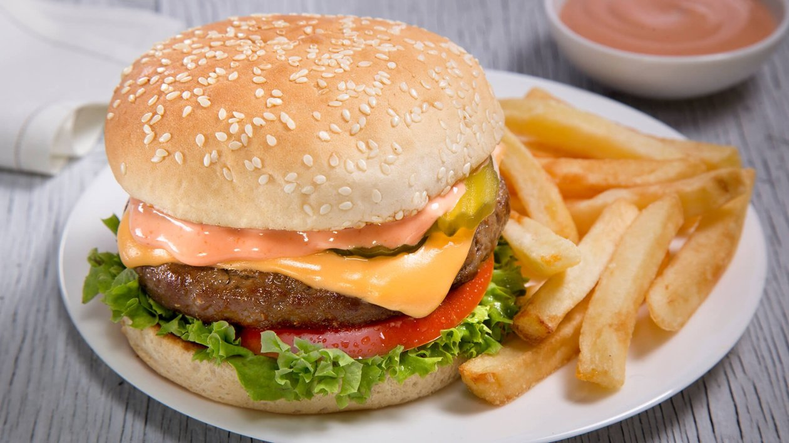
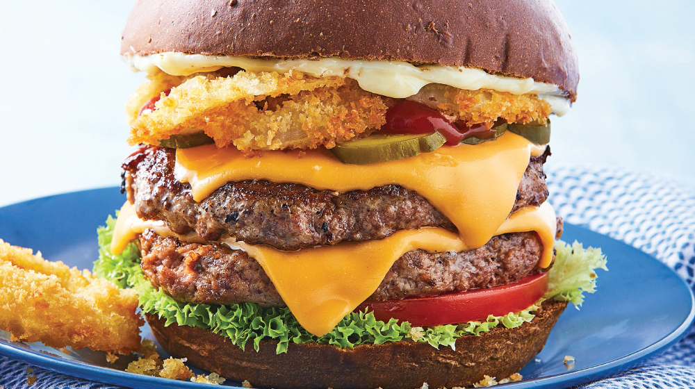

LA BURGUER CARBON

¡Una cangre Burguer! Primero pan, cangrejo, ketchup, mostaza, pepinillos, cebolla extra,
lechuga, queso, tomate y pan, en ese orden.
LA CANGREBURGUER MASTER PRO CARBON

un doble triple en balsa decorado de lujo de 4x4 estilo animal guijarros extras con vibración
exprimida eje con grasa ligera házlo llorar quémalo y déjalo nadar